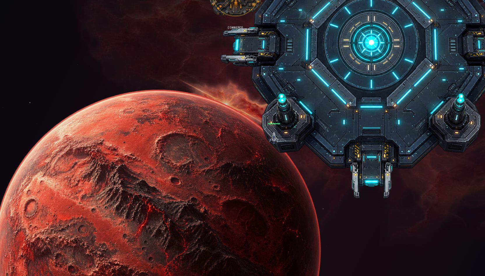
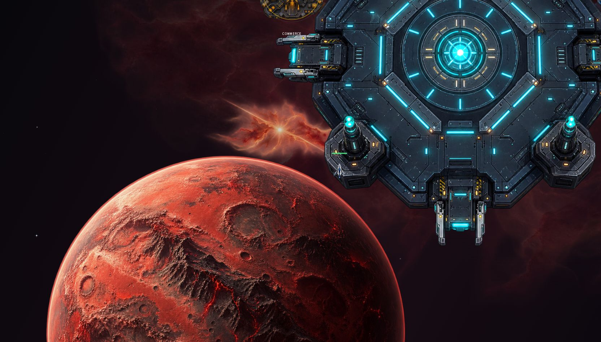
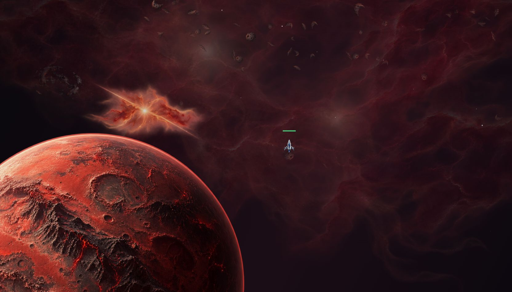

Hélion 1 — ajustement de la planète
Une planète légèrement plus petite, décalée vers le bas et la droite, avec un défilement plus lent.
Ouvrir la vidéo directement

Avant, au même emplacement du vaisseau.

Après ajustement.

Après 6 000 unités vers la droite : la planète reste dans le champ.
Aperçu isolé du moteur de décor avec un vaisseau représentatif.